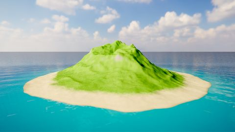
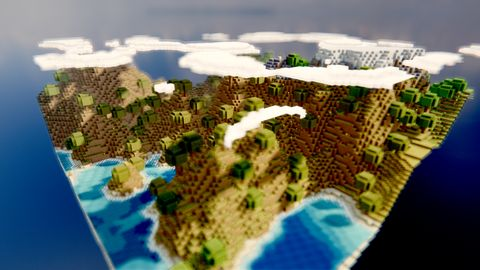
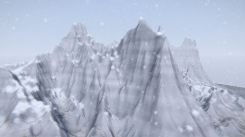
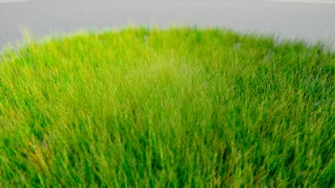
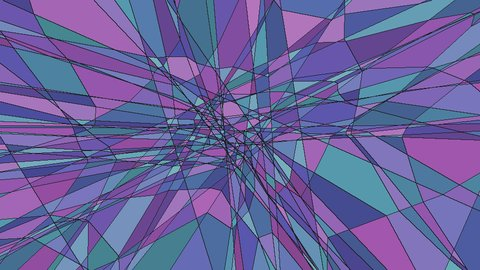
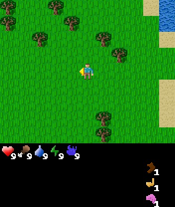

In simulation, my reinforcement learning controller running at 2 kHz does as well as a classical one at 4 kHz. I wrote it in C++ on GPU and ran it in real time on an optical bench. I also took part in the first test of this kind of controller on a real telescope, at the Haute-Provence Observatory.
Before my PhD, I worked for two years as a machine learning engineer at Orange. I defend my thesis in December 2026 and I am available from February 2027.






jonathandray83 [at] gmail [dot] com